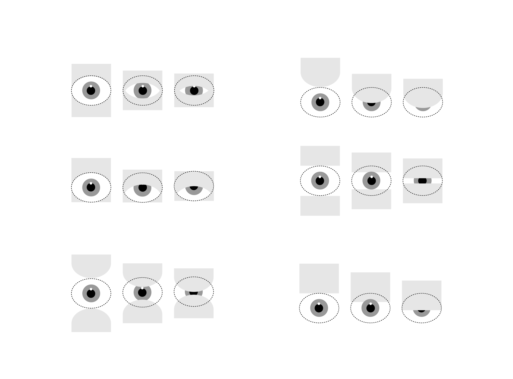
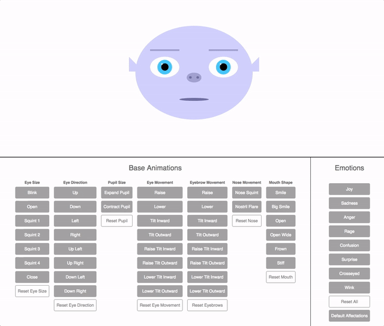

Proof of Concept
I started by researching and testing voice recognition libraries and chose Annyang for its simplicity and lightweight nature. I then built a rudimentary POC that demonstrated the ability to calling a function, a color change, depending on the oral command received.

Blink Exploration
Based on what I knew was possible with CSS and JS, I experimented with different ways the blink could work and how it would appear in motion. While the end product uses a clipping mask, this exploration helped me understand the different ways this could be achieved.

Eye Prototype
I began prototyping the most expressive and complex facial feature, the eye. Every possible desired eye movement was turned into a CSS class. Clicking a given control button triggers a function that adds one or more classes to the eye, each changing the shape and/or position of the eye.

Face Exploration
Once the eye design was completed, I explored different character designs via hand sketching and digital illustration. It was important for the character to convey friendliness, which translated into an overall wider face and large eyes.

Face Prototype
Once the eyes were prototyped, I scaled up the same control board concept to entail all facial features, including eyebrows, nose, and mouth. One or more animations combined together created a specific emotion.

Wireframing
Once the eyes were prototyped, I scaled up the same control board concept to entail all facial features, including eyebrows, nose, and mouth. One or more animations combined together created a specific emotion.